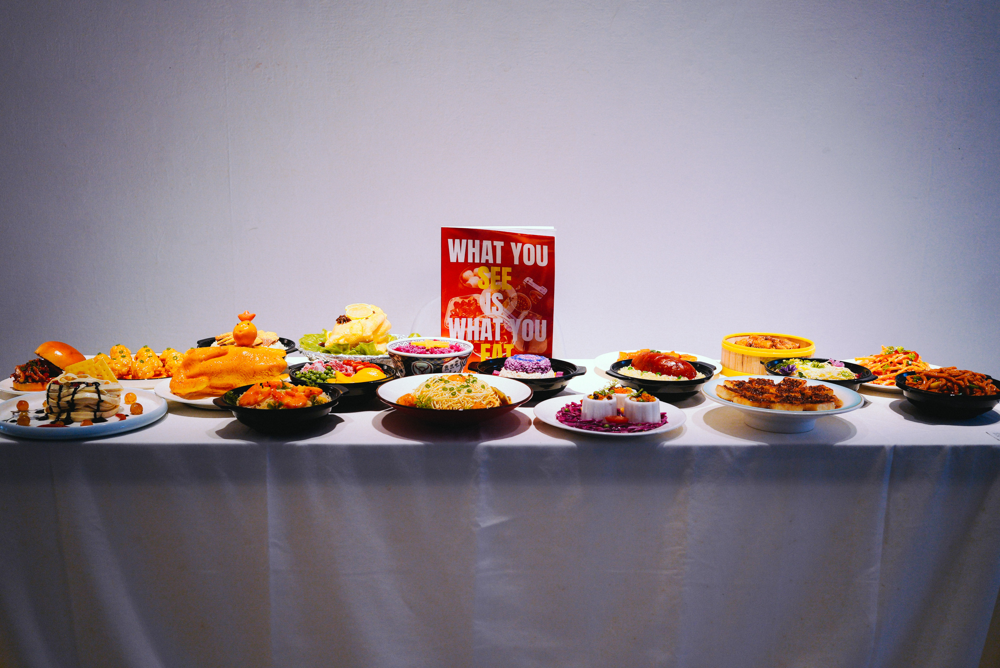
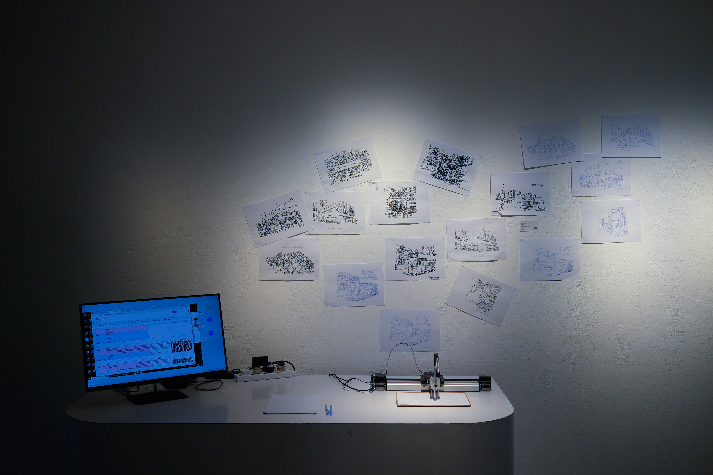
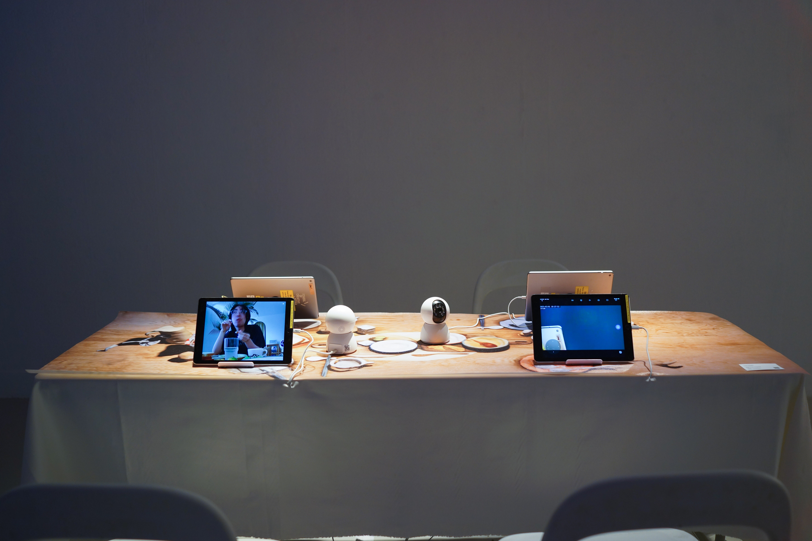
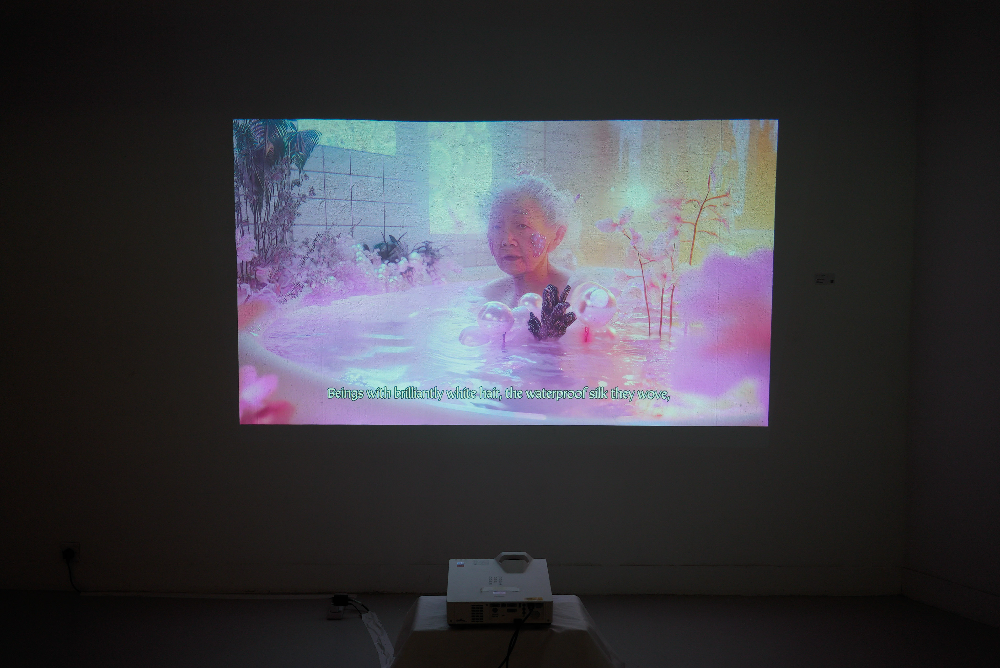
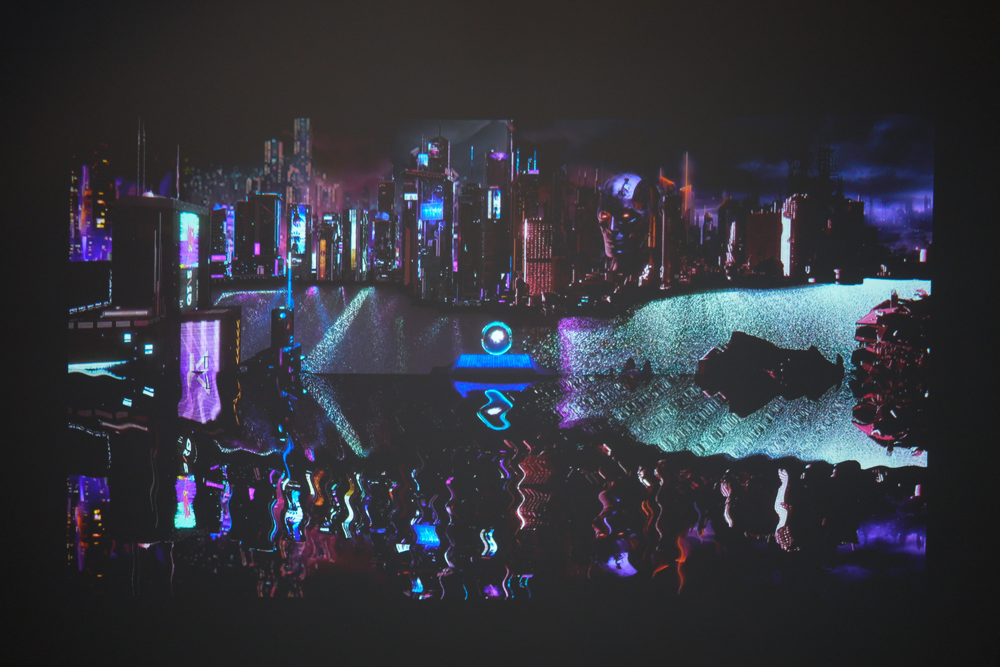
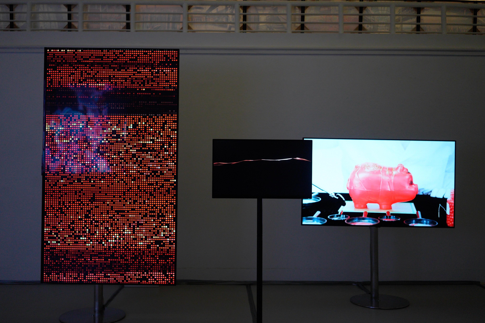
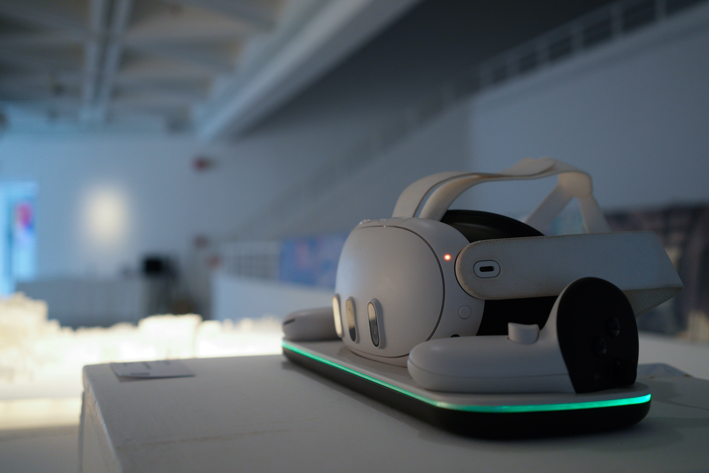
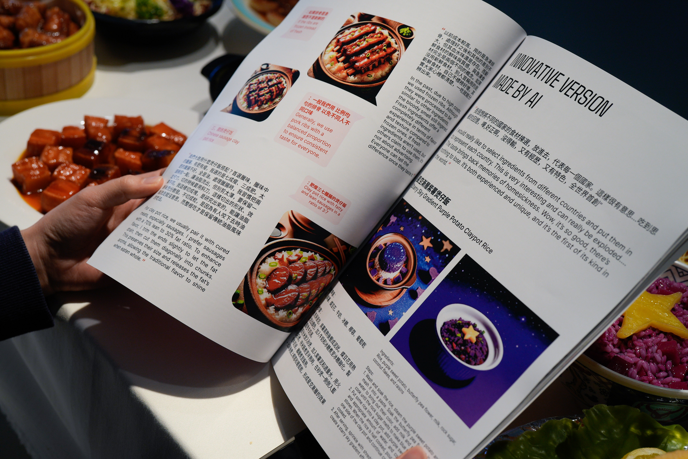

Future Tense
Future Tense
Exhibition
2025/03
Pao Galleries, Hong Kong Arts Centre
Cultural heritage consists of not only physical artifacts, but also transient processes, improvised actions, and expressed imaginations that tell us more about the human side of the heritage rather than the physical location itself. In a rapidly evolving technologically enabled world, intangible processes like culinary methods, social customs, and collective imaginations are often neglected, and fail to be recorded as carefully as physical artifacts. FUTURE TENSE HONG KONG is an art-technology- driven exploration of the future of the intangible side of Hong Kong’s cultural heritage, shaped by social change, climate change, and urban development, as imagined by its residents. This exhibition presents a VR navigation app that immersively maps Hong Kong’s cultural heritage, a photography and VR exhibit of food imagery generated by workshop participants using state-of- the-art Stable Diffusion technology, two multimedia artworks by Cyan D’Anjou and Meta Objects Studio that speculate on the visual futures seen in immersive form, and works by Paul Shepherd and Inhwa Yeom that immerses the audience in two techno-culture worlds reflecting our own cultural idiosyncracies. By amplifying the voices and imaginations of its people, the exhibition fosters a collective dialogue about the preservation and transformation of Hong Kong’s heritage in an ever-evolving world.
Curator: LIU Sijia Star
Producers: Zeng Xiaoke, Liu Bowen
Project Advisor: Richard William ALLEN
Participating Artists: Cyan D’Anjou, Inhwa Yeom, Pat Wingshan Wong (Foreseen Agency), Kachi Chan (Foreseen Agency), Paul Shepherd (Picture Rhythm Studios), Zoe Chan (Picture Rhythm Studios), RAY LC
Supported by:
HKADC, CityUHK ACIM, StudioForNarrativeSpaces, Epson, IAE , Picture Rhythm Studios, Foreseen Agency, Meta Objects
Exhibition Website: https://futuretensehk.wordpress.com/








